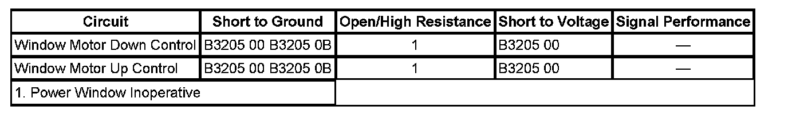

B3205
DTC B3205
DTC DESCRIPTOR
DTC B3205 00
Window Motor Circuit
DTC B3205 0B
Window Motor Circuit Current Above Threshold
DIAGNOSTIC FAULT INFORMATION

Perform the Diagnostic System Check - Vehicle prior to using this diagnostic procedure. Initial Inspection and Diagnostic Overview
CIRCUIT/SYSTEM DESCRIPTION
The driver door switch (DDS) and passenger door switch (PDS) control the power window functions through the power window motor up and down control circuits. The door switches monitor the control circuits for fault conditions when up or down operation is requested prior to activating the function and during operation.
CONDITIONS FOR RUNNING THE DTC
- Battery voltage must be between 9-16 volts.
- The ignition switch is in the ON position.
CONDITIONS FOR SETTING THE DTC
DTC B3205 00
The DDS or PDS detects a short to ground or short to voltage on a window motor control circuit.
DTC B3205 0B
During 5 occurrences of power window motor operation in an ignition cycle, the door switch has detected excessive current flow on a window motor control circuit.
ACTION TAKEN WHEN THE DTC SETS
DTC B3205 00
The power window motor operation will not be attempted whenever this condition is present.
DTC B3205 0B
Power window motor operation will be disabled for the current ignition cycle.
CONDITIONS FOR CLEARING THE DTC
DTC B3205 00
When the fault is no longer present, the door switch changes the current DTC to a history DTC.
DTC B3205 0B
The DTC will be current for the entire ignition cycle. The DTC will be a history DTC the following ignition cycles until the conditions for setting the DTC have been met.
The door switch will clear the history DTC after 50 fault free ignition cycles, or in response to a scan tool command.
DIAGNOSTIC AIDS
The DTC can be set due to excessive physical resistance in the window regulator assembly. Ensure proper mechanical operation of the regulator assembly prior to replacing electrical components.
CIRCUIT/SYSTEM TESTING
1. Disconnect the door switch connector C1.
2. Ignition ON, verify that a test lamp connected to ground does not illuminate when connected to either of the motor control circuit terminals in the harness connector.
- If the test lamp illuminates repair the affected control circuit for a short to voltage.
3. Verify that a test lamp connected to battery voltage does not illuminate when connected to either of the motor control circuit terminals in the harness connector.
- If the test lamp illuminates repair the affected control circuit for a short to ground.
4. Using a DMM verify that the resistance between the control circuit terminals in the harness connector is greater than 5 ohms.
- If the resistance is less than 5 ohms replace the affected power window motor.
5. If all the circuits test normal replace the affected door switch.
REPAIR INSTRUCTIONS
Perform the Diagnostic Repair Verification after completing the diagnostic procedure.
- Front Side Door Window Regulator Motor Replacement
- Control Module References for driver or passenger door lock and side window switch replacement. Verification Tests Programming and Relearning